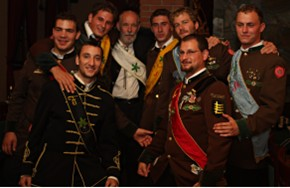

Már az épület maga is ámulatba ejtő… nem beszélve a két hatalmas fáról, ami a főbejáratnál a lépcsősort keretezi, és amelyeket még Magyarországon ültettek - hiszen több, mint 100 évesek… Menjetek be a kapun, mely mindig nyitva van. Az Akadémiához három épület tartozik, a főépület az, amelynél bejöttetek. Az épületeket hatalmas park övezi – sétáljatok körbe, és szippantsátok be azt a miliőt, amit a Selmeci diákok évszázadokon át. Ez bizony nem a Tóparti gimi….. Közben mesélek nektek a selmeci diákéletről – ugyanis az annyira nevezetes, és annyira meghatározó nem csak a magyarországi egyetemi hagyományokban, hanem még Európa más egyetemein is, hogy még az UNESCO szellemi világörökségi listájára is felkerült, „Selmeci diákhagyományok” néven. Gondolatban repüljünk vissza az 1700-as évekbe… 1735-ben alapították ugyanis az Akadémiát, elsőként a világon itt létesült műszaki felsőoktatási intézet. Bányászatot, kohászatot, géptant, matematikát, vegytant és fizikát oktattak itt az Európa minden tájáról meghívott nevezetes tudósok, professzorok. Páratlan volt az oktatás abban is, hogy itt Selmecen a gyakorlatban, működésben ismerték meg a hallgatók a selmecen alkalmazott világelső bányászati-kohászati műszaki megoldásokat és technológiákat. Az 1800-as években az Akadémia kibővült az erdészeti oktatással, innentől Magyar Királyi Bányászati és Erdészeti Akadémia lett. A hallgatók szerte Európából érkeztek, nagyjából a diákság kisebbik fele külföldi, elsősorban német, osztrák volt. Selmecen nem volt kollégium, nem volt menza, vagy társadalombiztosítás – a diákok egy zárt közösséget építettek, és egymást támogatták, segítették mindenben. Ennek a diákközösségnek szigorú hagyományai alakultak ki az évszázadok során, melyet az utód-egyetemek (Miskolc, Sopron) a mai napig gyakorolnak. A hallgatók az alábbi ranglétrát járták végig diákéveik alatt: Az egyetemre frissen bekerülő újoncok a „pogányok”. Őnekik ún. „keresztelkedésen” kellett átessenek, de csak miután az idősebbek próbára tették őket az ún. „balek-oktatáson” és ott megfeleltek az elvárásaiknak – ekkor balekká keresztelték őket, és az első éves hallgatók voltak a „balekok”. Az alapszigorlatok letétele után, legalább második éve az egyetemen tanuló, a selmeci hagyományok szellemében felavatott hallgatók a „firmák”. A végzős hallgató, aki tanulmányai végeztével elhagyja a campus területét, de örökké őrzi a selmeci hagyományokat, az a „filiszter” („filiszter leszek magam is”….) A selmeci hagyományok nagyon fontos része az egyenruha, mely nagy becsben van tartva, és más-más módon viselhetik a balekok, firmák, és valétálók azaz végzősök. A Bányász és Kohász hallgatók hétköznapi egyenruhája a gruben: fekete (mivel bányász-ruhából ered), derékba szabott zubbony aranygombokkal, és a szaknak megfelelő színű paszománnyal (azaz zsinóros díszítéssel), gallérral és válldísszel. Fekete nadrággal és csizmával hordták. Az Erdész hallgatók hétköznapi viselete a walden, aminek zubbonya őzbarna, és a paszomány, a gallér és a válldísz sötétzöld rajta. A diákoknak a mindennapi élet során megkopott, elhasználódott az egyenruhájuk. Mivel másikra nem nagyon volt pénzük, ezért foltokat varrtak rá; eleinte a ruhával megegyező színű foltokat. Aztán fokozatosan kialakultak a színes, mókás feliratokat, rajzokat ábrázoló foltok – a mai napig tele vannak színes foltokkal a miskolci bányász és a soproni erdész egyenruhák. Selmecen ezeket a foltokat csak lányok varrhatták fel az egyenruhára. A folt lehetett évfolyamjelvény, becenév, nótacím stb. A legrangosabb folt a „tempus” folt volt (piros szívbe arany zsinórral hímzett tempus szó). Akinek ezt a menyasszonya vagy jegyese felvarrta, akkor arról mindenki tudta, hogy foglalt. A selmeci diákok nótái nagyon fontosak voltak: nótázás nélkül nem volt esemény, nem volt összeröffenés, minden alkalomra megvolt a bevett nóta. A nóták a selmeci daloskönyvekben is fennmaradtak. Talán nem is tudtátok, hogy a ballagásotokon a selmeci valétálók (azaz ballagók) hagyományos dalait énekeltétek: a „Ballag már a vén diák”, vagy a „Gaudeámus igitur” itt születtek, ezen a helyen … A selmeci diákhagyomány fénypontjai a „szakestélyek”, ezek az ősi szokások szerinti, kötött menetű, leginkább tréfás hangnemben zajló összejövetelek. A szakestélyek eredete az Akadémia alapításáig, az 1700-as évekig nyúlik vissza - ennek megfelelően mindig gyertyafény mellett folytak (a mai napig), és kizárólag a szaknak megfelelő „szent italt”: sört vagy bort, valamint zsíros kenyeret szolgálnak fel. Jelentősebb szakestélyekre külön cserépkupa (cserép söröskorsó) készül. A szakestélyeknek legtöbbször van egy meghatározott célja, ami a nevét is adja neki: a balekkeresztelő, a szalag-avató, a gyűrű- és kupa-avató, a valétáló (azaz ballagó), illetve a gyász-szakestély. A régi szakestélyeken szakmai jellegű dolgokat beszéltek meg (nótázással és tréfálkozással megspékelve), de a szakmai jelleg elég hamar háttérbe szorult, és egyre inkább előtérbe került a vidámság, a jókedv, a nótázás, a vicces felszólalások, egymás vagy a professzorok kifigurázása. A szakestély mindig a szakok himnuszainak (Bányász, Kohász, Erdész) közös eléneklésével veszi kezdetét. A szakestélyre a diákok tisztségviselőket választanak maguk közül, a tisztséget a mellen átvetett vastag szalag színe is jelzi: Tisztségviselők: • Praeses (prézesz): A szakestély elnöke. Az ő szava szent és sérthetetlen, amit ő mond, az úgy is van. Feladata a szakestély levezetése. A szalagja fehér színű, mert feddhetetlen. • Major domus (major domusz): A szakestély háznagya, ő készíti el a házirendet, amit az elnök hitelesít. A házirendben foglaltakat mindenki köteles betartani. Az ő feladata elintézni, hogy legyen terem, ahol megtartják a szakestélyt, legyen zsíros kenyér és sör. Szalagja kék színű. • Fuchsmajor (fuxmajor): A balekcsősz. Feladata a sötét balekság irányítása és terelgetése. Ha egy balek szólni kíván a szakestélyhez, először a balekcsősznek kell szólnia, és ő közvetíti az elnöknek, mint egy tolmács. Szalagja fekete színű, mint a tudatlan balekság „setétsége”. Feladata a rend- és csendfenntartás is, amelyben serital kupakjával kivert botjuk a legnagyobb segítség. • Cantus praeses (kantusz prézesz): A nótabíró. Feladata a kellő nóta intonálása (azaz elő-éneklése) a szakestély folyamán. Szalagja piros színű, mert szívből énekel. • Contrapunct (kontra-punkt): Az elnök visszhangja. Feladata az elnök szavának erősítése. Egy jó kontra remek hangulatot tud teremteni a helyzethez passzoló beszólásaival. Régen azért volt szükség rá, mert a kocsmák zegzugos helyeire nem mindig jutott el az elnök hangja. Szalagja sárga színű, mert az irigység színét jelképezi. A szalagos tisztségviselők mellett a következő szalag nélkülieket is kijelölik: • Konzekvencia: A szakestély konzekvenciája. Feladata az elnök tévesztései után levonni a konzekvenciát egy sörrel teli kupa fenékig ürítésével, amelyet hangos „Vivát Praeses” kiáltás előz meg. Általában két konzekvenciát jelölnek ki. • Garatőrök: A szakestély tisztségviselőinek „csaposai”. Feladatuk ügyelni arra, hogy a szakest hivatalos tisztségviselőinek mindig legyen ital a korsójában. • Fuhrwerk (furverk): A szakestély „fuvarosai”. Feladatuk hazatámogatni a “spicces” Firmákat. Általában balekok látják el ezt a tisztséget. • Ünnepi alkalmakkor a szakestélyeken „krampampulit” készítettek, aminek külön felelőse volt: a „Páter Crampampuli”. Innen Selmecről származik tehát a szilveszteri krampampuli szokása, melyet anyai ükapátok nyomán még őriz a családunk… Végezetül a leglátványosabb hagyomány, a valétálás és a szalamander. A végzős hallgatók a Valétálás során búcsúztak a társaiktól és az Akadémiától („Valete!” = Éljetek boldogul!, latinul). A valétálás része a híres-neves „szalamander”: a végzős diákok és társaik, a valétálás estéjén bányászlámpásokkal és fáklyákkal, énekelve, kígyózó vonalban vonultak végig Selmecbánya belvárosában, búcsúzva az Alma Matertől. A valétálás után az öreg Firmát balekjai kivitték az egyik selmeci városkapuhoz, és kirugdalták a városból – jelképezve, hogy akadémiai pályafutása véget ért. A magyarországi ballagások mind-mind a selmecbányai valétálásból erednek… A Selmecbányai Magyar Királyi Bányászati és Erdészeti Akadémia 1920-ig működött. Akkor eljött Trianon… és az Akadémia professzorai és diákjai ládákban próbálták napok alatt menekíteni, amit lehetett. Az Akadémiát (illetve ami maradt belőle) Sopronba menekítették, majd a kommunizmus éveiben a Bányász-Kohász kart Miskolcra vitték, s az Erdész kar maradt Sopronban. Ez a két utód-egyetem a mai napig őrzi és gyakorolja a selmeci hagyományokat, melyeknek nagy becsülete van. (Más egyetemek próbákat tesznek a hagyományok lemásolására, például Budapesten – de ezek semmiképp nem tekinthetők a selmeci hagyományok folytatásának.)
Szakestély „tisztségviselői” Sopronban, az erdész kar barna egyenruhájában, a rávaló foltokkal, és a szakestély tisztségeihez dukáló szalagokkal. Sétáljatok körbe a Selmeci Akadémia kertjében, tegyétek tiszteleteteket ott, ahonnét annyi szép tradíció elszármazott…. Fejtsétek meg az alábbi rejtvényt, és a kulccsal megtudjátok, mi a következő célállomásotok… Rejtvény: Az Akadémia főépületének bejáratához egy lépcsősor vezet, és ezt a lépcsősort 100 éves borókafenyők őrzik. Hány hatalmas borókafenyő őrködik a lépcsősor mentén?
Az Akadémia főépületének bejáratához egy lépcsősor vezet, és ezt a lépcsősort 100 éves borókafenyők őrzik. Hány hatalmas borókafenyő őrködik a lépcsősor mentén?